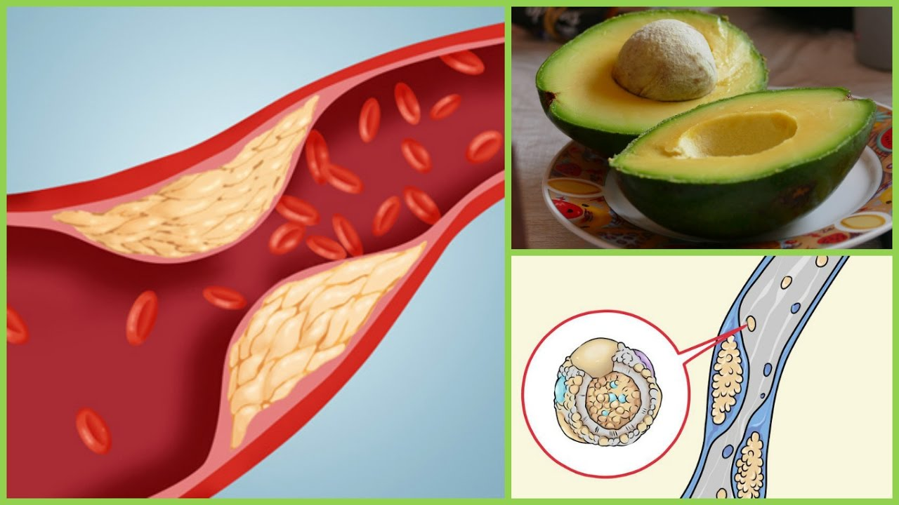

Avocados are very beneficial towards your health. Below is information given about the many beneficial things that avocados contain and can do.

Contains Alot of Fiber
According to an article by livestrong, it states that avocados contain a good amount of fiber and so they contain about 4.6 grams of fiber. Avocados contain certain fibers that encourage efficient digestion and prevent high sugar levels, this fiber is called soluble fiber (Campbell). They also contain other types of nutrients that are very beneficial such as potassium, folate, vitamin E, and more.
Click the text (fiber) below in order to read full article on the fiber contained in avocados.
FIBER
Prevent Cancer
Avocados can prevent cancer and that is proven because according to an article done by Dr.Mercola, A type of fat called avocatin B which are found in avocados can help fight a type of deadly cancer cancer called acute myeloid leukemia. This type of fat helped kill of the cancer stem cells which is amazing and keep the healthy cells in the human body (Dr.Mercola). Literally, in certain situations, avocados are the main solutions that are fighting against cancer. Click the text (prevents cancer) below in order to read full article on how avocados prevent cancer.
PREVENTS CANCER
Lowers Cholesterol
An article published by today, states that studies showed that an avocado a day reduces the risk of heart disease and lowers cholesterol. Avocados contain types of fibers called phytosterols and polyphenols in which can help lower cholesterol (Fox). A study showed that when people started adding an avocado a day to their diet, their LDL cholesterol decreased greatly which proves why avocados are important. Click the text (lowers cholesterol) below in order to read full article on how avocados lower cholesterol (Fox).
LOWERS CHOLESTEROL